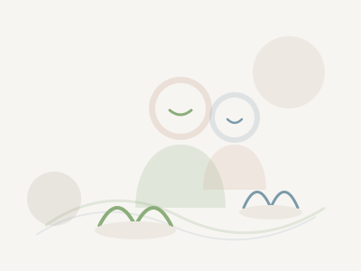

1
Elige tu camino
Decide si necesitas una consulta aislada, un programa de salud mental o un acompañamiento por duelo, muerte o pérdida.
Psicólogos y tanatólogos certificados listos para acompañarte por internet. Consultas aisladas desde $400 y programas de 4 o 6 sesiones para cuidar tu salud mental o acompañarte en un duelo.
Pedir ayuda no debería ser complicado. En pocos minutos puedes elegir entre una consulta aislada o un programa guiado.
Decide si necesitas una consulta aislada, un programa de salud mental o un acompañamiento por duelo, muerte o pérdida.
Según tu horario y lo que necesites, te vinculamos con un psicólogo o tanatólogo certificado.
Agenda tu sesión por videollamada en el horario que te funcione, de 7 a.m. a 11 p.m.
Próximamente: un mensaje de quienes hacemos posible este espacio de acompañamiento.
No todos necesitamos lo mismo. Por eso puedes elegir entre una sesión aislada para lo urgente, o un programa guiado de 4 o 6 sesiones para trabajar a profundidad tu salud mental o acompañarte en un duelo.


Únete a una red de psicólogos y tanatólogos. Recibe pacientes sin invertir en publicidad, accede a conferencias magistrales grabadas, bibliografía y materiales para tus sesiones.
Desde una sola sesión hasta un programa guiado. Todo accesible, todo por internet.
Para esos días en los que solo necesitas hablar con alguien.
Un espacio definido para cuidar tu salud emocional.
Acompañamiento especializado para atravesar una pérdida.
Profesionales comprometidos con crear un espacio seguro para sanar.
Directora Clínica · Tanatóloga
15 años acompañando procesos de duelo y pérdida. Especialista en tanatología clínica y cuidados paliativos.
Coordinador de Formación
Psicólogo clínico con enfoque en crisis vitales y acompañamiento emocional. Diseña nuestros programas de capacitación.
Psicooncóloga · Supervisora
Especialista en duelo anticipado, enfermedad crónica y supervisión clínica para profesionales de la red.
"Encontré a mi terapeuta en menos de 5 minutos. Por primera vez sentí que alguien entendía mi duelo sin juzgarme."
"Como tanatólogo, la plataforma me ha dado visibilidad, formación de calidad y una forma sencilla de gestionar mis citas."
"El cuestionario de matching me ayudó a elegir a alguien que realmente se ajustaba a lo que necesitaba en ese momento."
Escríbenos y te respondemos en menos de 24 horas.
Si estás en crisis, no estás solo.
Todas las sesiones son privadas, en entornos seguros y con profesionales certificados. Cumplimos con las normativas de protección de datos.
Esta plataforma no sustituye la atención de emergencia. Si tú o alguien cercano está en riesgo, llama a tu línea local de emergencias o a la línea de crisis de tu país.